Фундамент дизайна
Типографика
Типографика в веб-дизайне — это не “красивые” шрифты, а правильная логика подачи текста. Правильная логика создаёт красоту.
Классификация шрифтов
Гротески
Гротески — шрифты без засечек. В отличие от других шрифтовых групп, гротески отличаются особой лаконичностью и минималистичностью форм.
Эмоции, передаваемые гротесками
1. Минимализм и функциональность
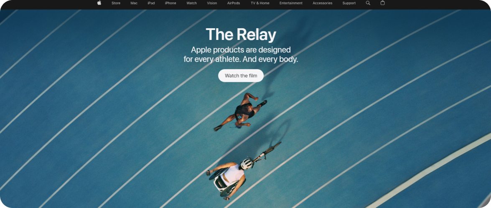
Скриншот сайта Apple
Использование шрифта San Francisco передает ощущение чистоты, лаконичности и функциональности.
2. Современность и динамичность
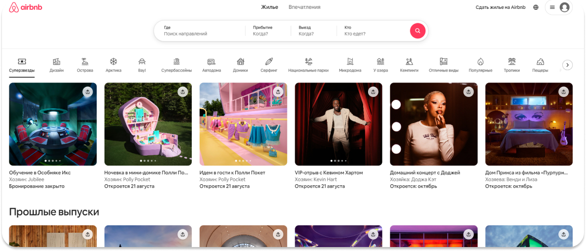
Скриншот сайта Airbnb
Шрифт Cereal придает сайту современный, технологичный и интерактивный вид.
3. Сила и уверенность
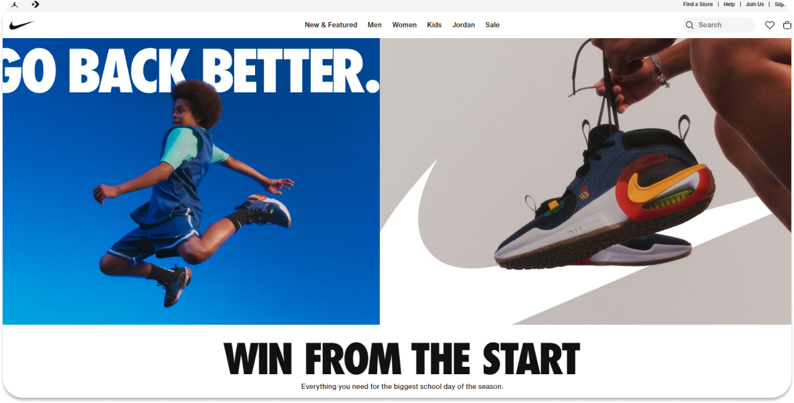
Скриншот сайта Nike
Шрифт Nike Grind подчеркивает силу, надежность и авторитет бренда.
Антиквы
Антиквы — шрифты с засечками(небольшими деталями на концах букв). Антиквы обладают плавными, округлыми формами и придают тексту торжественный, благородный вид.
Эмоции, передаваемые антиквами
1. Элегантность и изысканность
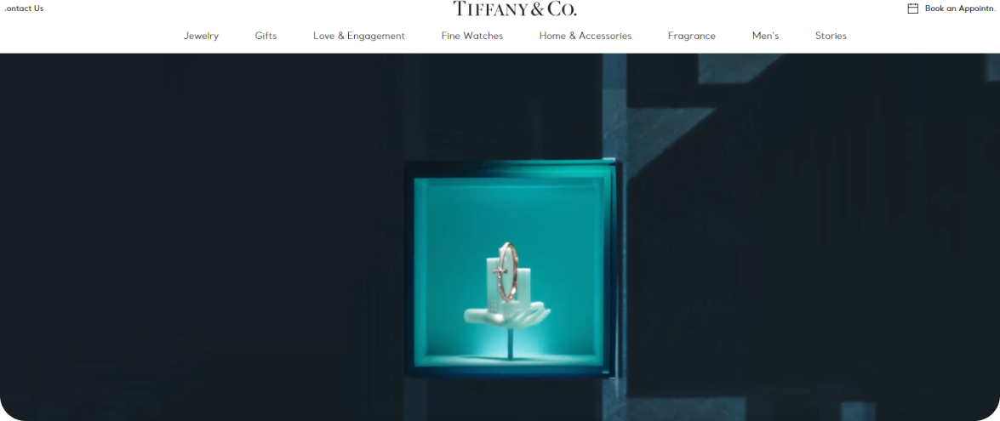
Скриншот сайта Tiffany & Co
Шрифт Didot придает сайту элегантный и утонченный вид.
2. Традиционность и консерватизм
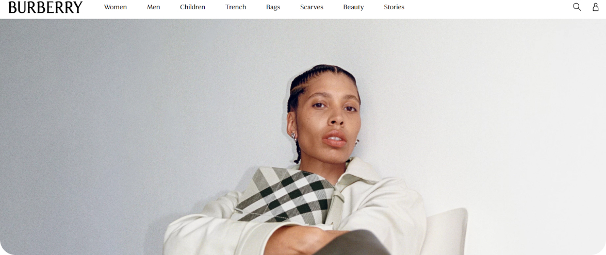
Скриншот сайта Burberry
Антиква Caslon подчеркивает классические ценности и консервативный подход компании.
3. Уважение и авторитет
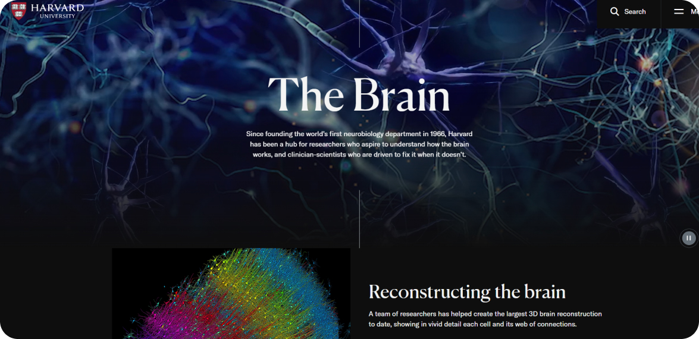
Скриншот сайта Гарвардского университета
Использование гарнитуры Bembo создает ощущение авторитетности и престижа.
Рукописные
Рукописные — шрифты, имитирующие естественный почерк человека, созданный при помощи пера, кисти или других инструментов.
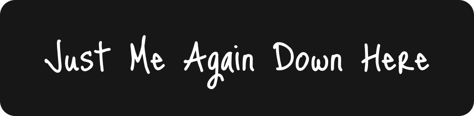
Эмоции, передаваемые рукописными
1. Индивидуальность и уникальность
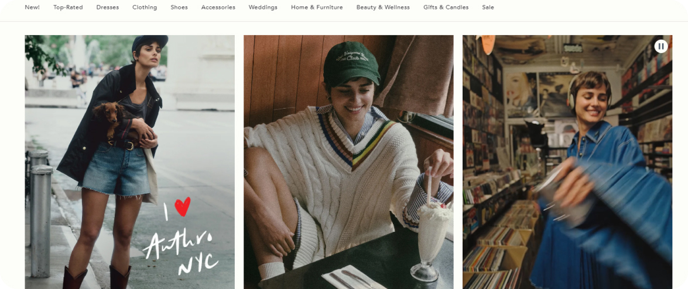
Скриншот сайта Anthropologie
Рукописный шрифт в логотипе и заголовках создает ощущение эксклюзивности.
2. Искренность и эмоциональность
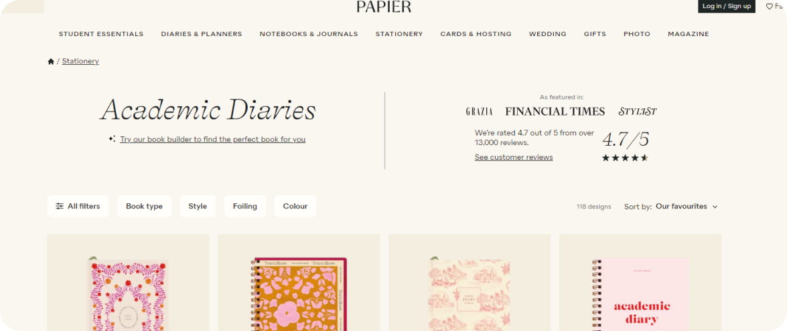
Скриншот сайта Papier
Рукописный шрифт Papier передает искренность и душевность бренда.
3. Непринужденность и легкость
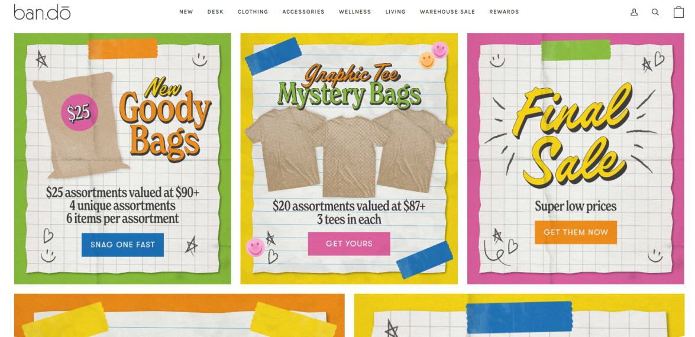
Скриншот сайта ban.do
Фирменный рукописный шрифт создает ощущение непринужденности и расслабленности.
Акцидентные
Акцидентные — декоративные, оригинальные шрифты, которые используются преимущественно для акцидентных (второстепенных) текстов, таких как заголовки, подзаголовки, логотипы и рекламные слоганы.
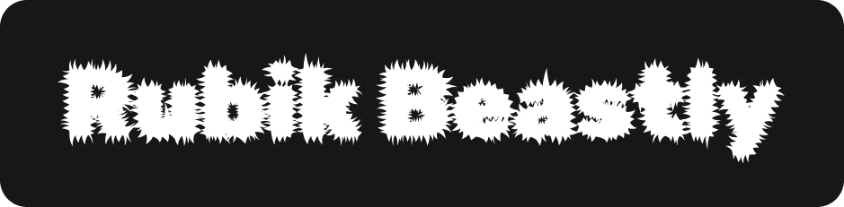
Эмоции, передаваемые акцидентными
1. Дружелюбие и открытость
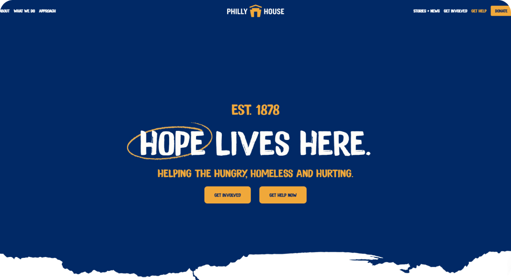
Скриншот сайта Philly House
Изогнутые и округлые формы шрифта создают ощущение тепло и доступности, что особенно важно для некоммерческой организации, ориентированной на сообщество.
2. Запоминаемость
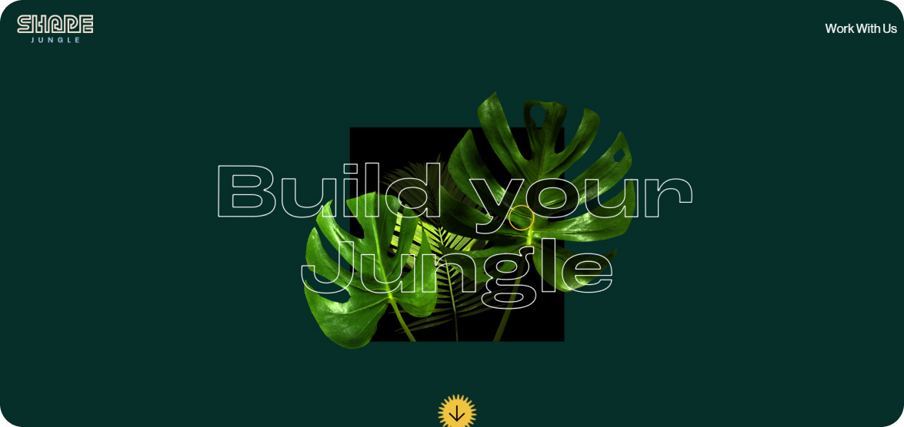
Скриншот сайта Shape Studio
Уникальные шрифты делают содержимое страницы более запоминающимся. Это важно для бренда, стремящегося выделиться на фоне конкурентов и создать устойчивые ассоциации с проектом.
Примеры заданий для практики
Исследование шрифтов
Выбери 5 основных категорий шрифтов (например, Serif, Sans-Serif, Slab Serif, Script, Display). Для каждой категории найди 3 примера шрифтов, опиши основные характеристики и укажи, в каких случаях их лучше использовать.
Шрифтовые пары
Исследуй различные шрифтовые пары (например, один для заголовков и один для основного текста). Создай презентацию из 5 комбинаций шрифтов, объясняя, почему они работают вместе, и в каких случаях они могут быть использованы.
Макет веб-сайта
Создай макет веб-сайта с использованием разных типов шрифтов. Выбери один шрифт для заголовков, один для основного текста и один для акцентов. Объясни свой выбор и как выбранные шрифты соответствуют стилю сайта.